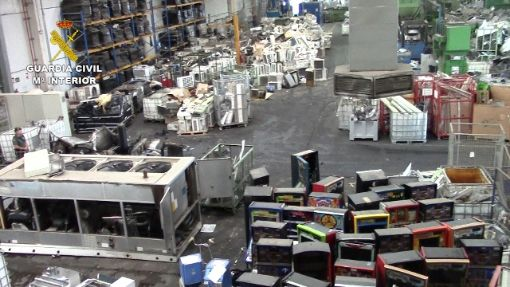

Les notícies d’il·legalitats en la qüestió dels residus electrònics també han fet ressò a Espanya. El juliol de 2020 es van detenir 5 directius d’una empresa de residus elèctrics i electrònics a Aznalcóllar (Sevilla).
S’acusa als directius de falsificació de documentació, exportació il·legal de residus i emissió de gasos tòxics a l’atmosfera. El SEPRONA (Servei de Protecció de la Natura) ha determinat que els certificats falsificats van servir per estafar 16 milions d’euros. A més, l’incorrecte tractament dels residus fa que els danys ambientals s’estimin per valor de 8 milions d’euros.
Els residus que tractava aquesta empresa requerien de procediments importants de seguretat donada pels SCRAP (Sistemes Col·lectius de Responsabilitat Ampliada del Productor). Incomplir aquestes normatives comporta un alt risc per la salut dels treballadors i pel medi natural i ambiental.
Un error en el procediment de la investigació va fer impossible la pròrroga. No s’havia imputat formalment als investigats. Degut a això, la investigació va ser interrompuda i els acusats han quedat lliures de tota culpa per la presumpció d'innocència. Hi havia forts indicis de criminalitat, tot i així el judici va ser arxivat provisionalment.
Referències i fonts:
- Ministeri de l'Interior - Cinc detinguts i dos investigats en una empresa de Sevilla dedicada al reciclatge electrònic: https://www.interior.gob.es/opencms/es/detalle/articulo/Cinco-detenidos-y-dos-investigados-en-una-empresa-de-Sevilla-dedicada-al-reciclaje-electronico/